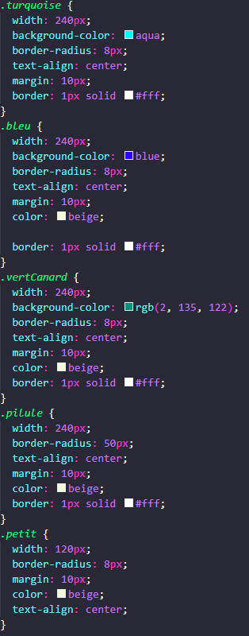

DRY ? C'est "Don't Repeat Yourself" ! Une règle de base à garder en tête quand on code. Il faut chercher à optimiser, éviter de se répéter.
Exercice :
Faites le ménage pour optimiser ce code CSS au maximum
(le fichier doit passer de 51 à 31 lignes de css pour le même aspect en front) :
